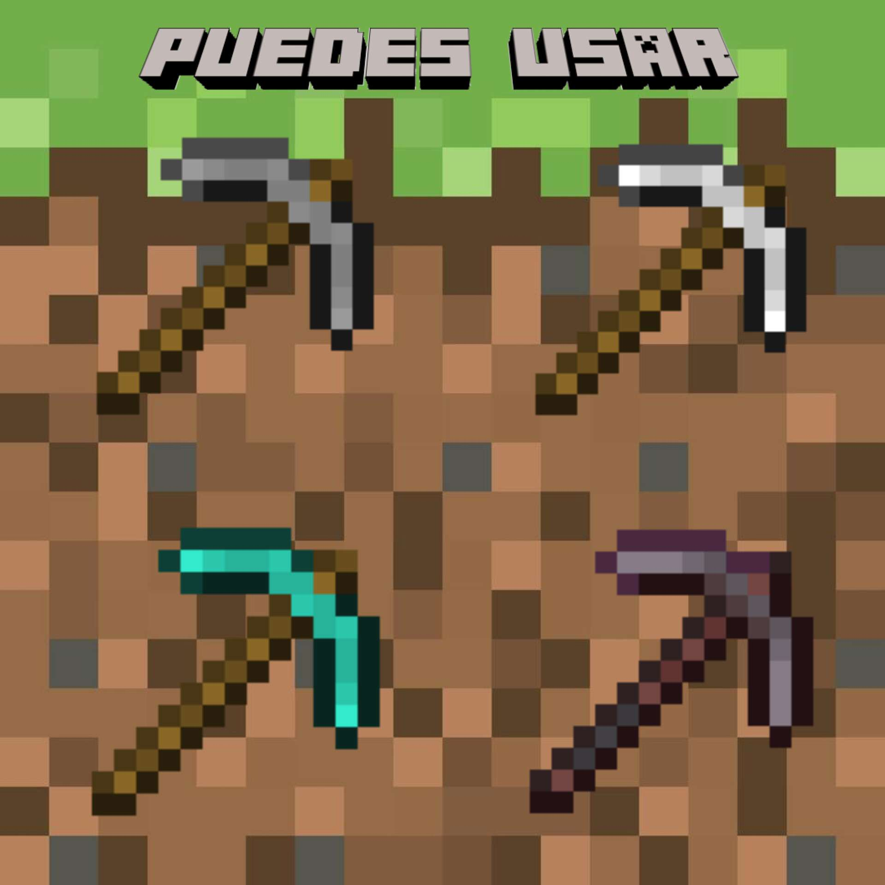
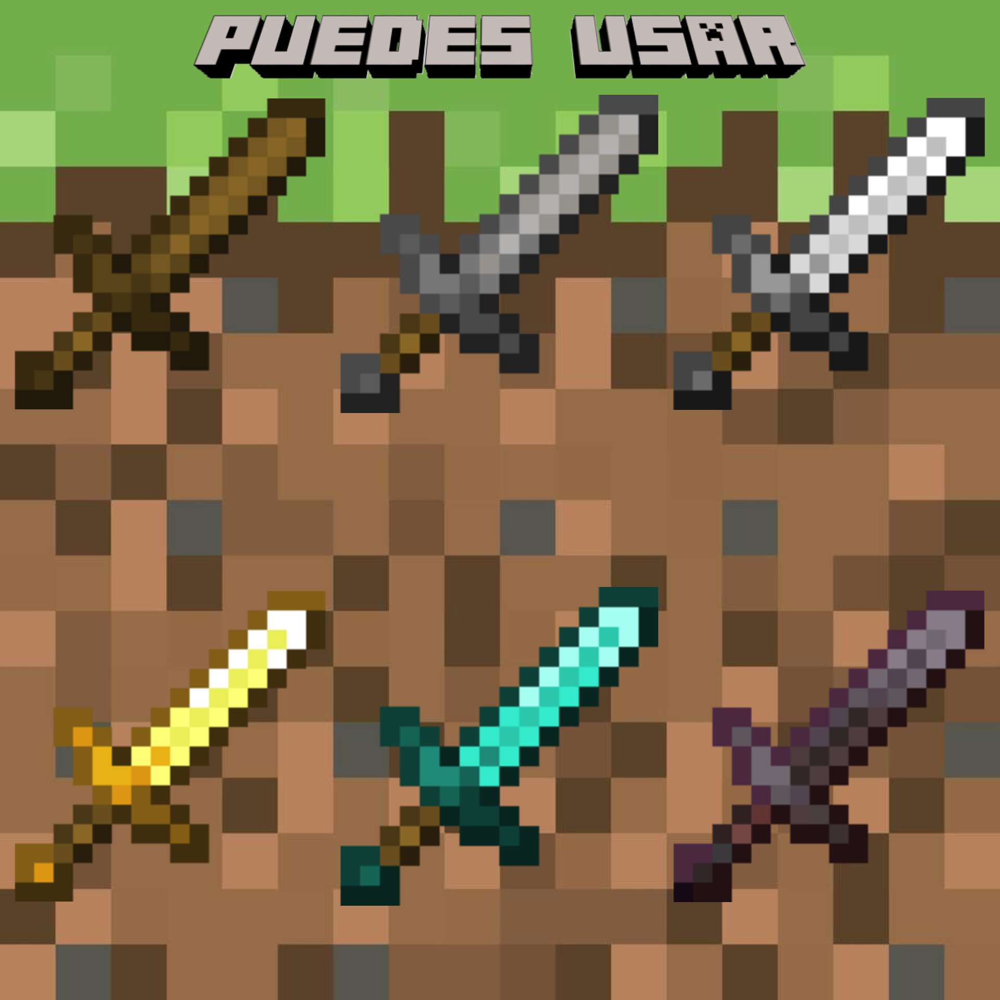

Para conseguir hierro tienes que picar menas de hierro, suelen encontrarse estando cerca de las menas carbón en niveles subterráneos. Para obtener el mineral tienes que cocinarlo en un horno utilizando carbón.

Para conseguir oro tienes que picar menas de oro, suelen encontrarse en lugares subterráneos en capas más profundas.
Para conseguir diamante tienes que picar menas de diamante, suelen encontrarse en lo más profundo de las cuevas, una manera para encontrarlas es buscar en zonas donde haya lava, cuando llegues a la zona significará que estas en el lugar correcto para encontrar diamante.
Para conseguir el pedernal tienes que picar un bloque de grava, esta no se suelta al instante, hay un 10% de probabilidad de que caiga el mineral. La grava la puedes encontrar en las cuevas, en lagos y en el nether.
Para conseguir netherite tienes que picar bloque de escombros ancestrales, para encontrarlos tienes que buscar cuidadosamente ya que están ocultos en la dimensión del nether. Luego tienes que cocinar los escombros ancestrales en horno con carbón y esto te dará fragmentos de netherita, para hacer el lingote en una mesa necesitas 4 lingotes de oro y 4 fragmentos de netherita.


Para conseguir cuero tienes que matar mobs que son: vacas, caballos, burros y llamas. Estos mobs los puedes encontrar en bosques, en montañas y en praderas.
Para conseguir plumas tienes que matar mobs que son las gallinas. Pueden soltar entre 1 y 4 plumas, puedes encontrarlas en praderas.
Para conseguir hilo tienes que matar mobs que son: arañas, te puede dar entre 0 y 2. Para encontrar las arañas estas aparecen en las noches o también en las cuevas.
Para conseguir piedra tienes que picar con una picota, está la puedes encontrar en las capas subterráneas, cuevas o hasta en la superficie, en montañas o en el lago.
Para conseguir tablones tienes que talar árboles, hay distintos tipos de árboles en distintas zonas. Con cualquiera de ellos puedes fabricar lo que requiera de madera. Luego de talar tienes que fabricar en la mesa. Los arboles lo puedes encontrar en las distintas zonas del juego.


Para conseguir el gancho de cuerda tienes que fabricarla con la mesa de crafteo, se quiere de: 1 lingote de hierro, un palo de madera y 1 bloquen de tablón de madera.